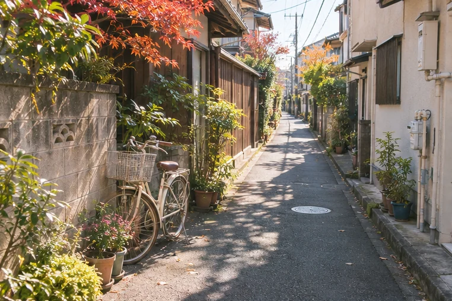
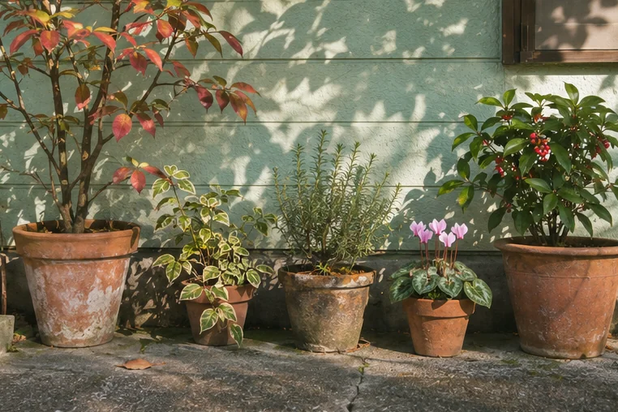
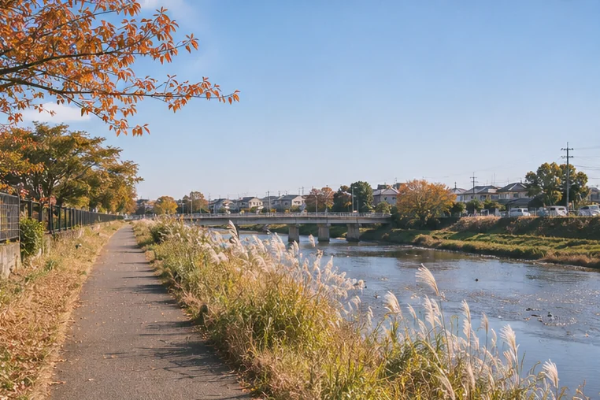
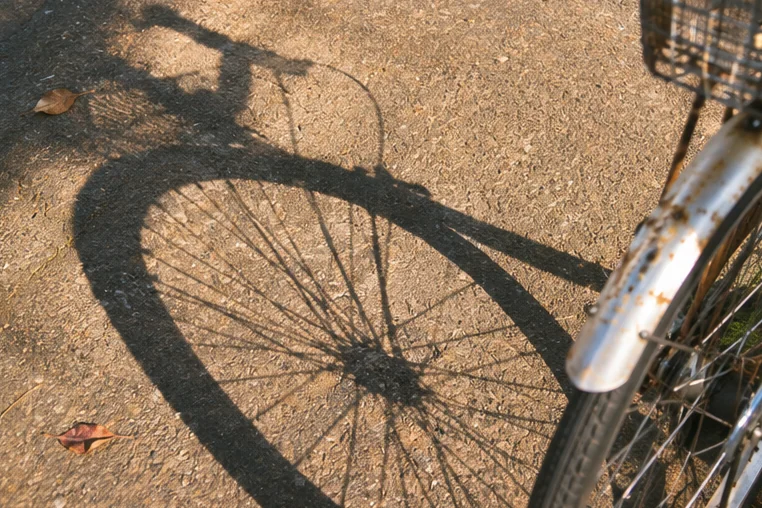

THE PHOTO JOURNAL
足跡Ashiato.
COLLECTED MOMENTS
写真を選ぶと、大きくひらきます。
STUDIES OF EVERYDAY LIFE
何でもない日の、風景。
写真日記の見せ方を描いた、
AI生成のサンプル写真です。


THE QUIET STREETS
午後の路地
通りを一本それると、日なたと日陰のあいだに細い道が続いている。
AI生成のサンプル

LITTLE DISCOVERIES
軒先の植木鉢
少しずつ形の違う鉢が、壁沿いに並ぶ。
AI生成のサンプル

ON THE WAY HOME
川沿いの帰り道
川べりに出ると、空が急に広くなる。
AI生成のサンプル

LIGHT AND SHADOW
もう一台の自転車
路面に落ちた影にも、車輪のスポークが一本ずつ見える。
AI生成のサンプルUNTIL THE NEXT DETOUR